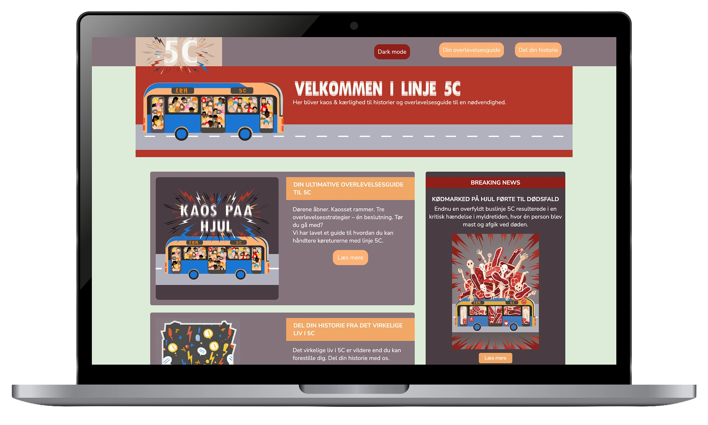
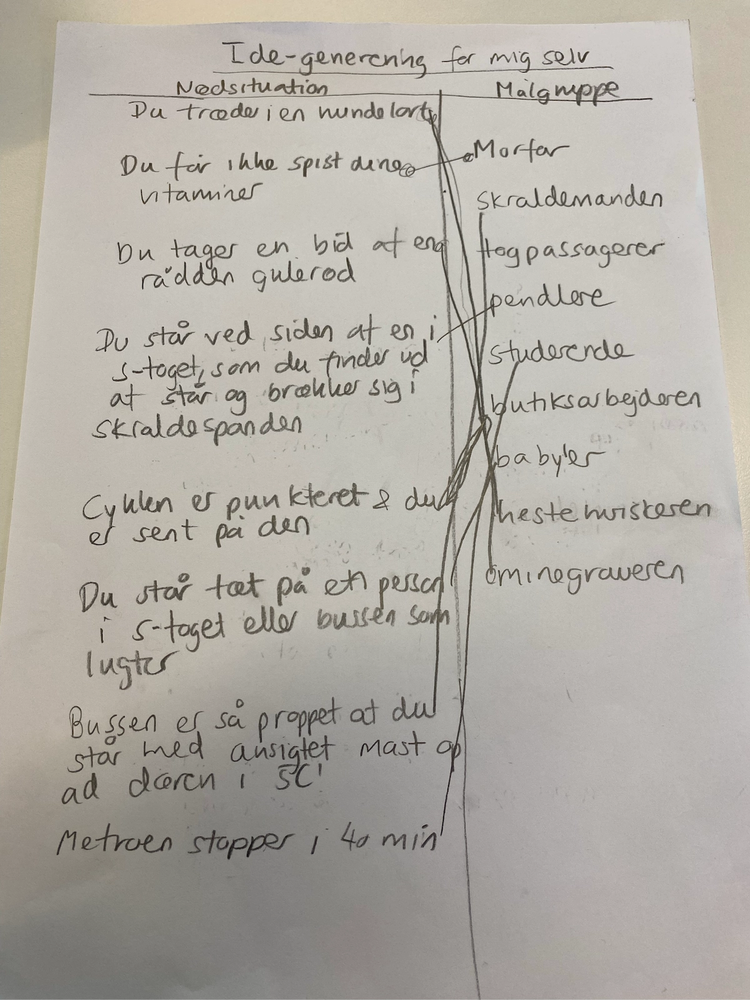
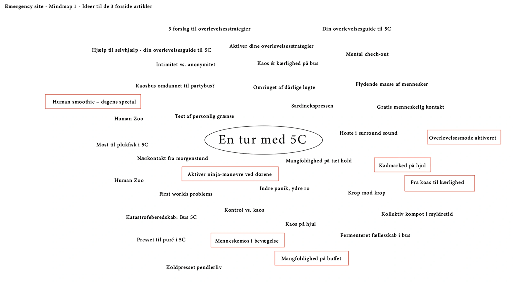
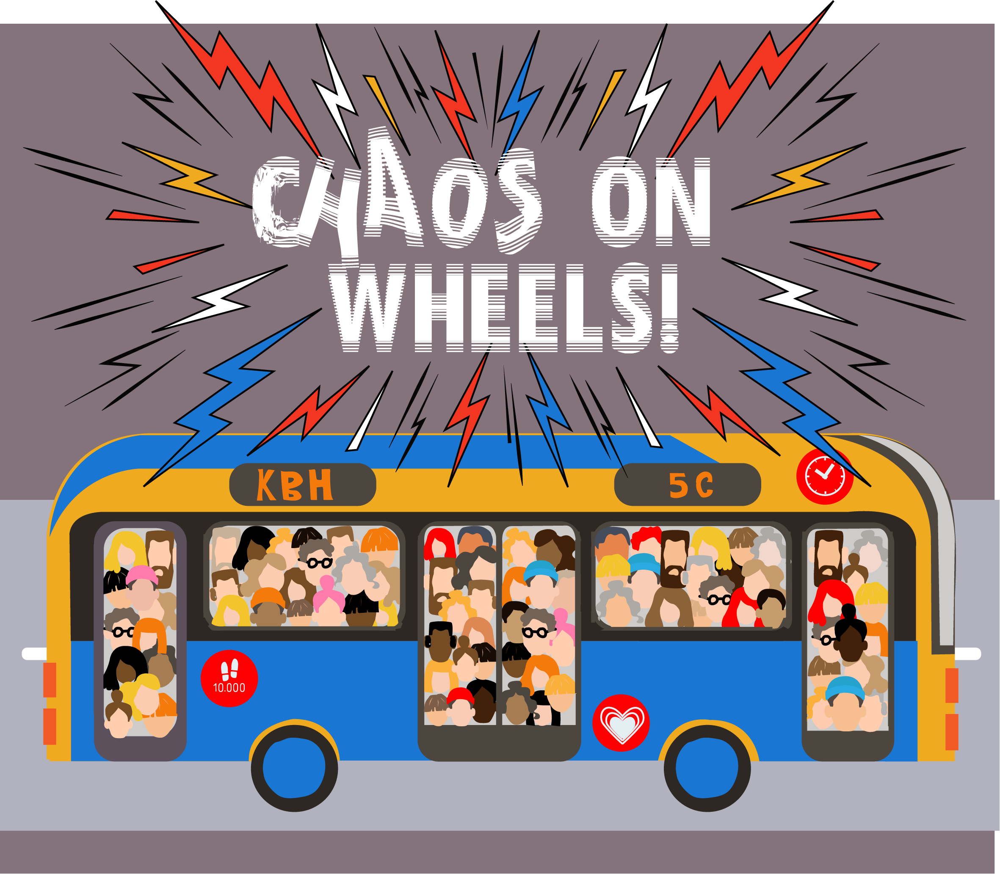
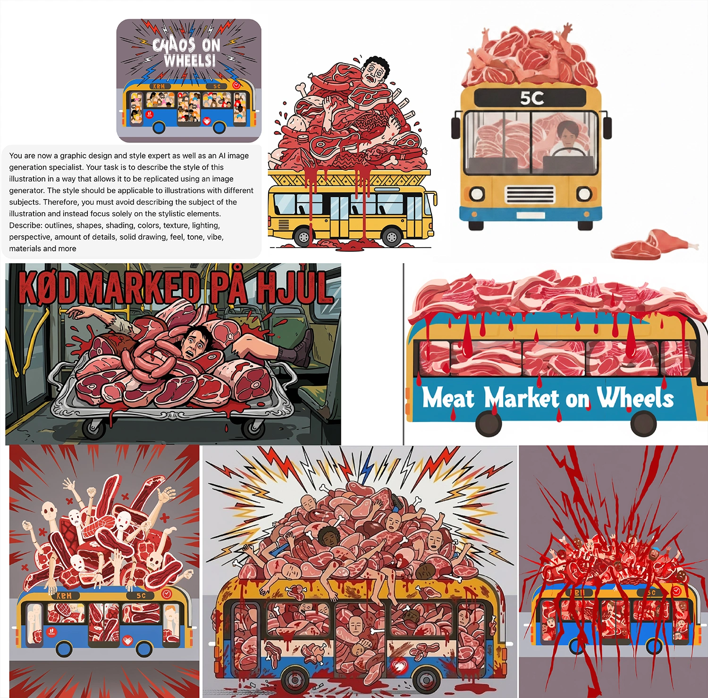
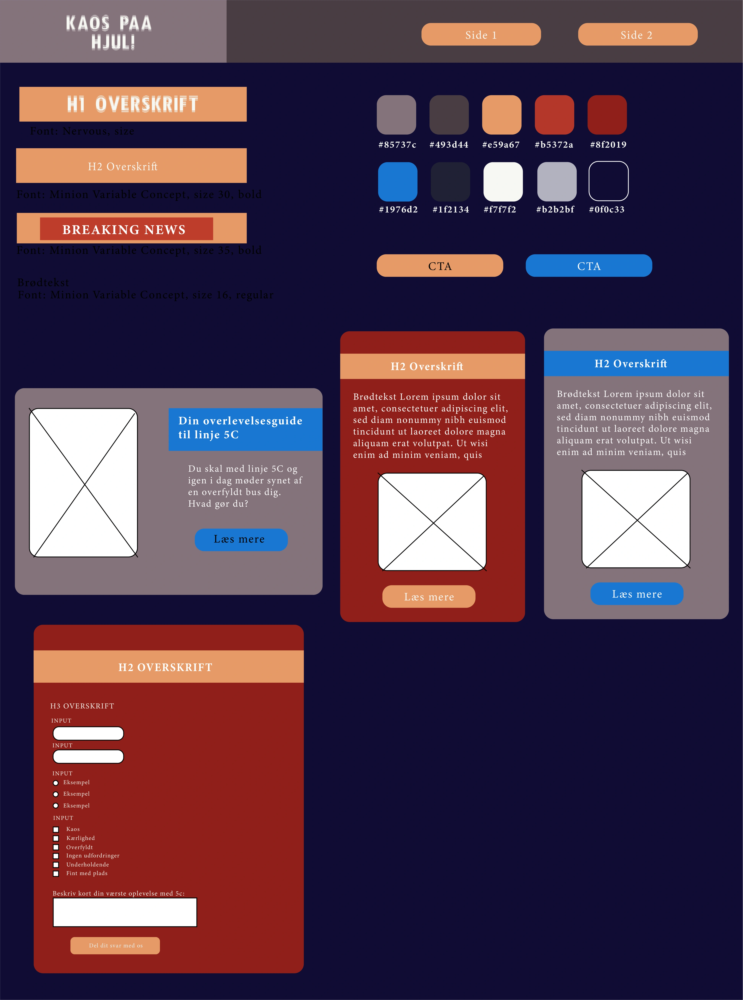
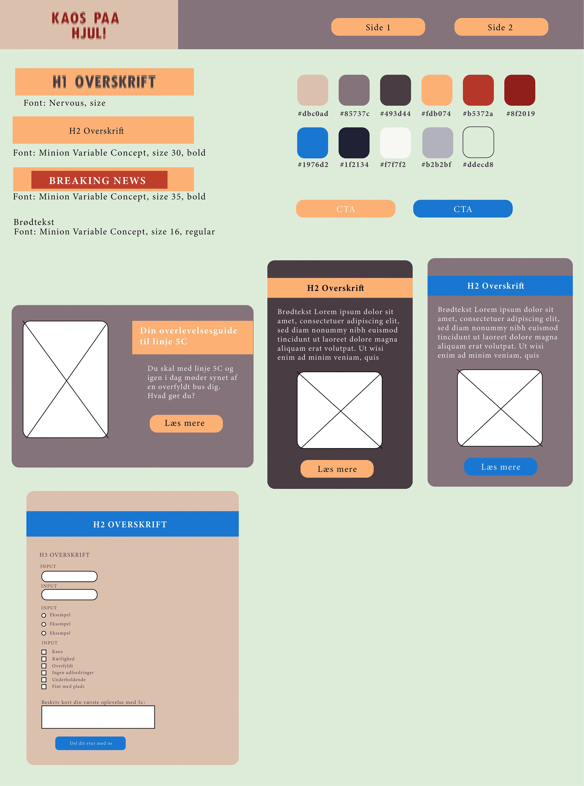
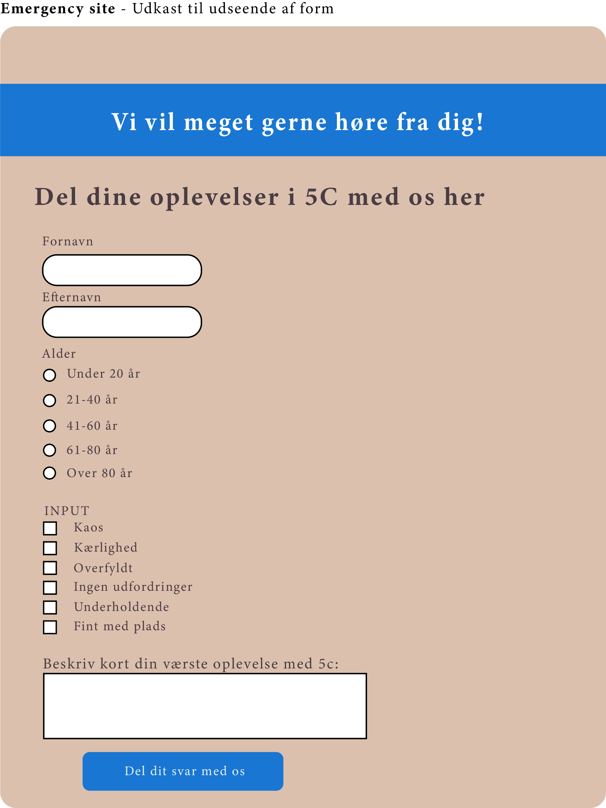

Projekter
04 UI
Linje 5C

Løsning
Jeg har udviklet et website med fokus på visuel formidling, brugeroplevelse og funktionalitet i desktop. Sitet indeholder blandt andet SVG-grafik, formularer, nyhedssektioner, pop-up vinduer, dark/light mode samt forskellige CSS-animationer. Derudover har jeg arbejdet med AI-genereret billeder og tekst som en del af den kreative proces.







Proces
Projektet begyndte med en lidt anderledes idéudvikling gennem brainstorm, krydsmetoden, mindmaps og papir- prototyper. Herefter arbejdede jeg med udvikling af SVG-grafik i illustrator, som blev implementeret i HTML, CSS og JavaScript. Jeg brugte også javascript til at implementere dark mode version. Undervejs arbejdede jeg med animationer, formularer, interaktive elementer og forskellige designløsninger for at skabe et mere dynamisk og spændende website.
Reflektion
Jeg lærte at krydsmetoden var et brugbart redskab til at udfordre sig selv og ens tankegang. Det overraskede mig hvor lang koden var til min SVG-grafik illustration. Og så var det en overraskelse af man kunne gemme elementer som hotspots og derefter lave anima- tioner og javascript på dem inde i koden. Det samme med ændring af farver mm. Jeg fik også lidt føling med at arbejde med formularer. Det var nogenlunde forståeligt at sætte dem op i HTML og CSS, men det var en udfordring for mig at lave opsummeringsdelen for at kunne samle alle data et sted. Generelt var det et sjovt site at arbejde med, fordi jeg fik udvidet min viden en smule, om hvordan man kan gøre et site mere interessant iform af bevægelse og interaktion af elementerne. Jeg lærte hvor vigtigt det er med en god struktur i koden, da det nemt bliver uoverskueligt at finde rundt i.